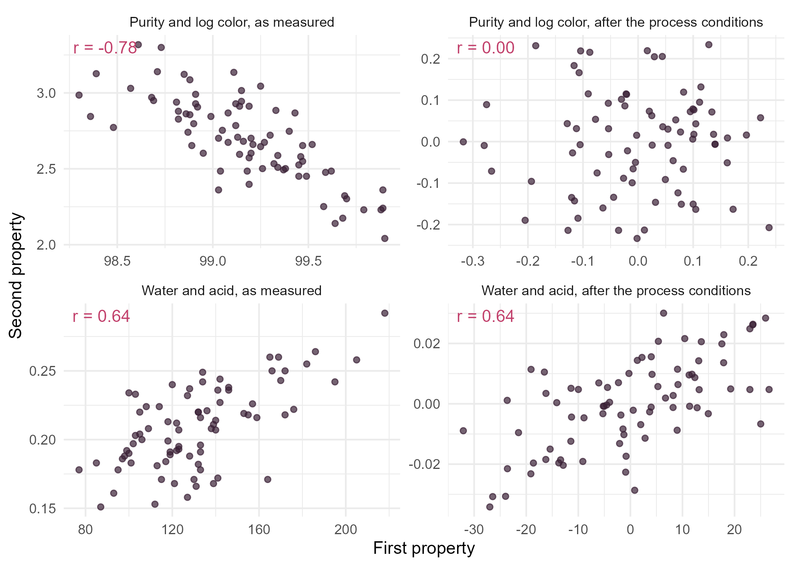

Module 3 · Lesson 11 of 13 Week 57 of 160 About 5–7 hours
Multivariate regression and correlation
Four quality properties, one set of process conditions
Fit a multivariate multiple regression of several responses on the same predictors, test each predictor’s effect on all the responses at once, measure each response’s multiple correlation with the predictors, and use partial correlations to tell direct links between responses from shared causes, with the right test.
Lessons 1 to 4 described the four quality properties of the 80 batches: purity, water, color and acid. Now the process engineers want to know what drives them. Each batch also has a record of its process conditions: the reactor temperature, the residence time, the water content of the feed, and the catalyst. That’s four responses and four predictors.
One regression per property would give the coefficients, as in Module 2. But some questions involve all four properties at once. Does the residence time matter for the product’s quality at all? Are two properties linked directly, or only because the same conditions drive both? This lesson answers them with multivariate multiple regression and partial correlation.
Four responses, four predictors, one model. It’s regression, but every coefficient comes with three cousins!
In this lesson you’ll:
- fit a multivariate multiple regression, and see that its coefficients are those of separate regressions
- test each predictor’s effect on all the responses at once
- predict all four properties for a planned batch
- measure how well each response is predicted, with its multiple correlation
- tell direct links from shared causes with partial correlations, and test them
The model
As in Lesson 4, FS73, the batch with the acid-wash residue, is left out. The color goes in on the log scale, which Lesson 3 found closer to normal:
bq <- read_csv("data/batch_quality.csv", show_col_types = FALSE) |>
filter(batch_id != "FS73") |>
mutate(log_color = log(color_apha), catalyst = factor(catalyst))
select(bq, batch_id, temp_C:catalyst, purity_pct, water_ppm, log_color, acid_mgKOH) |> head(4)
#> # A tibble: 4 × 9
#> batch_id temp_C residence_min feed_water_ppm catalyst purity_pct water_ppm
#> <chr> <dbl> <dbl> <dbl> <fct> <dbl> <dbl>
#> 1 FS01 181. 36.4 321 B 99.0 205
#> 2 FS02 191. 48.2 196 B 99.2 122
#> 3 FS03 176. 62.8 275 A 99.3 133
#> 4 FS04 179. 62.5 329 B 99.1 176
#> # ℹ 2 more variables: log_color <dbl>, acid_mgKOH <dbl>With n batches, q responses and k predictors, the multivariate multiple regression model is
\underset{n \times q}{Y} = \underset{n \times (k+1)}{X}\ \underset{(k+1) \times q}{B} + \underset{n \times q}{\mathcal{E}},
where each row of \mathcal{E} is a N_q(\mathbf{0}, \Sigma) error vector. Y holds the four responses as columns, X is the usual design matrix of Lesson 2.4, and B has one column of coefficients per response. The least-squares estimate is the familiar formula with a matrix in place of a vector:
\hat B = (X^\top X)^{-1} X^\top Y .
So each column of \hat B is exactly what a separate regression of that response would give. What’s new is everything that involves the responses together: the error covariance matrix \Sigma, estimated by \hat\Sigma = \hat{\mathcal{E}}^\top\hat{\mathcal{E}}/(n - k - 1), and the tests built on it. In R, lm() fits the model when the response is a matrix, cbind() of the response columns.
Your turn. The setup code has loaded the 79 batches as bq. Fit the multivariate regression of the four properties on the four process conditions, and look at its coefficients.
The fourth response is the acid, acid_mgKOH.
mlm <- lm(cbind(purity_pct, water_ppm, log_color, acid_mgKOH) ~ temp_C + residence_min + feed_water_ppm + catalyst, data = bq)
coef(mlm)A 5 × 4 matrix: one column per response, one row per coefficient. Reading down the water’s column: each extra minute of residence time takes out 1.09 ppm of water, and each extra ppm of water in the feed leaves 0.51 ppm more in the product. Fit lm(water_ppm ~ temp_C + residence_min + feed_water_ppm + catalyst, data = bq) on its own, and you’ll get the same numbers.
Testing a predictor on all the responses
Does the residence time matter for the product’s quality? In the multivariate model, that’s the hypothesis that its whole row of B is zero: no effect on any of the four properties. Each predictor gets an SSCP matrix H, which compares the model’s fit with and without it, and H is tested against the error matrix E with the four statistics of Lesson 6. A predictor with one coefficient per response has a rank-1 H, so all four statistics give the same F-test.
car::Anova() runs these tests for every predictor. Its Type II tests compare the full model with the model that drops one predictor, so the order of the predictors doesn’t matter.
Your turn. The setup code has fitted the model as mlm. Run the multivariate tests.
The function is car::Anova(), with a capital A.
car::Anova(mlm)Every process condition matters for the quality as a whole. The temperature (Pillai’s trace 0.93) and the feed water (0.79) have enormous effects. The residence time’s is smaller but clear (0.37, p = 10^{-6}), and the catalyst’s is the smallest (p = 0.001).
Which properties does each condition affect? summary(mlm) prints the four separate regressions’ coefficient tables. Here they are, with each condition’s effect on each property and its p-value:
| Purity (%) | Water (ppm) | log color | Acid (mg KOH/g) | |
|---|---|---|---|---|
| Temperature (per °C) | −0.051 (< 0.0001) | −0.07 (0.78) | +0.037 (< 0.0001) | +0.0030 (< 0.0001) |
| Residence time (per minute) | +0.001 (0.54) | −1.09 (< 0.0001) | +0.007 (0.0001) | −0.0010 (< 0.0001) |
| Feed water (per ppm) | −0.0027 (< 0.0001) | +0.51 (< 0.0001) | +0.0003 (0.37) | +0.0004 (< 0.0001) |
| Catalyst B (against A) | +0.127 (0.00002) | −0.3 (0.93) | +0.010 (0.71) | −0.0011 (0.75) |
The heat lowers the purity and darkens the product. A longer residence time dries it, but darkens it a little. Wet feed makes wet, slightly less pure product. And catalyst B seems to raise the purity, by 0.13 percentage points, and to do nothing else.
Your turn. Is that last impression right? Test the catalyst’s effect on the other three properties together, with a multivariate regression of the water, the log color and the acid.
The third of the other properties is acid_mgKOH.
others <- lm(cbind(water_ppm, log_color, acid_mgKOH) ~ temp_C + residence_min + feed_water_ppm + catalyst, data = bq)
car::Anova(others)For the catalyst, Pillai’s trace is 0.0035 and p = 0.97. There’s no sign that catalyst B changes the water, the color or the acid, in any combination. Its only effect is on the purity.
Your turn. Next week’s campaign will run at 190 °C with 45 minutes of residence time, on catalyst A, with feed from Kestrel, at about 250 ppm of water. Predict all four properties at once.
The feed water is 250 ppm.
planned <- data.frame(temp_C = 190, residence_min = 45, feed_water_ppm = 250, catalyst = "A")
predict(mlm, newdata = planned)Purity 98.72%, water 152 ppm, log color 2.88 (that’s e^{2.88} = 17.8 APHA), and acid 0.245 mg KOH/g. Wet feed, a hot reactor and a short residence time make a wet, acidic product. With the estimated error covariance matrix, you could also put a joint prediction region around these four numbers, like the ellipses of Lesson 2.
Multiple correlation
How well do the process conditions predict each property? The multiple correlation R between a response and a set of predictors is the largest correlation between the response and any linear combination of the predictors. That combination is the regression’s fitted value, so R is the correlation between y and \hat y, and R^2 is the regression’s coefficient of determination from Module 2. Its test is the regression’s overall F-test.
Your turn. summary(mlm) is a list of four regression summaries, one per response. Pull out each one’s R^2.
A regression summary stores its R^2 as r.squared.
sapply(summary(mlm), function(s) s$r.squared)The process conditions explain 89% of the variation in purity, 81% in log color, 75% in acid and 74% in water. The multiple correlations, the square roots, are 0.95, 0.90, 0.87 and 0.86.
Partial correlation
The four properties are strongly correlated with each other. For example, the purity and the log color have a correlation of −0.78, and the water and the acid 0.64. Are these direct links? Or are they there only because the same process conditions drive both properties?
The partial correlation of two variables, given a set of other variables, answers that. It’s the correlation between what’s left of the two after the linear effect of the others is taken out: the correlation of the two sets of residuals. Here, the residuals of the multivariate regression do the job at once. Their correlation matrix is the matrix of partial correlations of the responses, given the process conditions.
Here are the two pairs before and after the process conditions are taken out:
mlm <- lm(cbind(purity_pct, water_ppm, log_color, acid_mgKOH) ~ temp_C + residence_min + feed_water_ppm + catalyst, data = bq)
res <- as.data.frame(resid(mlm))
panel_levels <- c("Purity and log color, as measured", "Purity and log color, after the process conditions",
"Water and acid, as measured", "Water and acid, after the process conditions")
scatter <- bind_rows(
tibble(panel = panel_levels[1], x = bq$purity_pct, y = bq$log_color),
tibble(panel = panel_levels[2], x = res$purity_pct, y = res$log_color),
tibble(panel = panel_levels[3], x = bq$water_ppm, y = bq$acid_mgKOH),
tibble(panel = panel_levels[4], x = res$water_ppm, y = res$acid_mgKOH)
) |>
mutate(panel = factor(panel, levels = panel_levels))
r_labels <- scatter |> group_by(panel) |> summarise(r = sprintf("r = %.2f", cor(x, y)))
ggplot(scatter, aes(x = x, y = y)) +
geom_point(color = "#3A1F35", alpha = 0.7, size = 1.5) +
geom_text(data = r_labels, aes(label = r), x = -Inf, y = Inf, hjust = -0.15, vjust = 1.5, color = "#C2416C", size = 3.8) +
facet_wrap(~ panel, scales = "free", ncol = 2) +
labs(x = "First property", y = "Second property") +
theme_minimal(base_size = 11)
The purity and the color look tightly linked, but the link disappears completely once the process conditions are taken out: their partial correlation is 0.00. Hot batches are both less pure and darker, and that’s all. The water and the acid keep their whole correlation, 0.64. That’s a direct link, and the chemistry explains it: water hydrolyzes the product into acid.
Your turn. Compute the correlation matrix of the residuals: the partial correlations of the four properties, given the process conditions.
The residuals of a model are resid(mlm).
round(cor(resid(mlm)), 2)Every partial correlation is close to zero, except the water’s and the acid’s, 0.64. Once the process conditions are known, the four properties vary independently, except for the water-acid link. That’s the multivariate regression’s estimate of \Sigma, rescaled to a correlation matrix.
NoteGo deeper: partial correlations from the inverse correlation matrix
There’s a neat shortcut. If P = R^{-1} is the inverse of the correlation matrix of a set of variables, the partial correlation of variables i and j, given all the others in the set, is
r_{ij \cdot \text{rest}} = -\frac{P_{ij}}{\sqrt{P_{ii}\,P_{jj}}} .
That’s how software computes partial correlation networks, which draw a line between two variables only when their partial correlation isn’t zero. Try it with the four process conditions (with the catalyst as a 0/1 column) and the four properties: the water-acid partial correlation, given everything else, is still 0.64.
Challenge round
Challenge 1 · Testing a partial correlation. Is the water-acid partial correlation, r = 0.64, more than chance? A partial correlation given m variables is tested like an ordinary correlation, with m fewer degrees of freedom:
t = \frac{r\sqrt{n - 2 - m}}{\sqrt{1 - r^2}}, \quad \text{on } n - 2 - m \text{ degrees of freedom.}
Here, n = 79 and m = 4: temperature, residence time, feed water and the catalyst’s 0/1 column. Compute t and its p-value. (cor.test() on the two sets of residuals would use n - 2 = 77 degrees of freedom, which is slightly too many.)
Four variables are partialled out: m = 4.
r <- cor(resid(mlm))["water_ppm", "acid_mgKOH"]
df <- 79 - 2 - 4
t_stat <- r * sqrt(df) / sqrt(1 - r^2)
c(t = t_stat, p = 2 * pt(-abs(t_stat), df))t = 7.12 on 73 degrees of freedom, p = 6 \times 10^{-10}. The water-acid link is real.
Challenge 2 · Through the water. The residence time and the feed water both affect the acid, according to the table above. Do they act on the acid directly, or only through the water they leave in the product? Fit the acid on the water and the temperature, then test whether the other three conditions add anything.
The third condition to add is the catalyst.
small <- lm(acid_mgKOH ~ water_ppm + temp_C, data = bq)
large <- lm(acid_mgKOH ~ water_ppm + temp_C + residence_min + feed_water_ppm + catalyst, data = bq)
anova(small, large)F = 0.90, p = 0.44. Once the product’s water and the temperature are known, the residence time, the feed water and the catalyst tell you nothing more about the acid. They affect the acid only through the water, which fits the hydrolysis story: to control the acid, control the water and the temperature. That’s the step-down idea of Lesson 7 again.
Quick quiz
1. How do the coefficients of a multivariate multiple regression compare with separate regressions of each response?
\hat B = (X^\top X)^{-1}X^\top Y works column by column. What the multivariate model adds is joint inference.
2. What does car::Anova(mlm) test for the residence time?
It tests that the residence time’s whole row of B is zero.
3. What’s the multiple correlation of a response with a set of predictors?
Its square is the regression’s R^2.
4. The purity and the log color have a correlation of −0.78, but a partial correlation of 0.00 given the process conditions. What does that mean?
Once the temperature and the other conditions are accounted for, nothing links the two.
5. How many degrees of freedom does the t-test for a partial correlation given 4 variables have, with n = 79?
n - 2 - m = 79 - 2 - 4 = 73.
6. Given the water and the temperature, the residence time and the feed water add nothing to the model of the acid. What does that suggest?
Their effect on the acid is real, but it’s carried by the water.
Wrap-up
You can now model several responses on the same predictors! Here’s what you’ve learned:
- Multivariate multiple regression, Y = XB + \mathcal{E}, is fitted by
lm(cbind(...) ~ ...). Its coefficients are those of separate regressions. - Multivariate tests of each predictor,
car::Anova(), ask whether it affects any response. Here, catalyst B affects only the purity. - Prediction with
predict()gives all the responses at once. - The multiple correlation R is the correlation between a response and its fitted values, with R^2 the familiar coefficient of determination.
- Partial correlations, the correlations of residuals, separate direct links from shared causes. Purity and color share causes; water and acid are linked directly.
- A partial correlation given m variables is tested with n - 2 - m degrees of freedom.
TipPractice in RStudio (optional, about an hour)
Download batch_quality.csv into your project’s data-raw/ folder.
- The inverse correlation matrix. Build the partial correlations of all eight variables (the catalyst as a 0/1 column) from the inverse of their correlation matrix, as in the “Go deeper” box. Which links survive among the process conditions themselves?
- With FS73. Refit the model with FS73 included. Which residual stands out, and how does it change the water-acid partial correlation?
- Interaction terms. Does the temperature’s effect on the color depend on the residence time? Add
temp_C:residence_minto the multivariate model, and test it withcar::Anova(). - Two predictors together. Use
car::linearHypothesis(mlm, c("temp_C = 0", "residence_min = 0"))to test two predictors together on all four responses. How many non-zero eigenvalues does its E^{-1}H have, and why?
NoteKey words from this lesson
- Multivariate multiple regression
- A regression of several responses on the same predictors, Y = XB + \mathcal{E}, with correlated errors.
- Coefficient matrix
- B, with one column of regression coefficients per response.
- Error covariance matrix
- \Sigma, the covariance matrix of a row of errors, estimated from the residuals.
- Multiple correlation
- The correlation between a response and its best linear prediction from a set of predictors. Its square is R^2.
- Partial correlation
- The correlation between two variables after the linear effects of a set of other variables have been removed from both.
- Shared cause
- A variable that drives two others, making them correlated even when neither affects the other.
NoteWant to read more?
- Penn State STAT 505, Lesson 6: Multivariate Conditional Distribution and Partial Correlation. Conditional distributions, partial correlations and their tests.
- John Fox and Sanford Weisberg, Multivariate linear models in R, section 2. Fitting and testing multivariate regressions with
lm()andcar. - Johnson and Wichern, Applied Multivariate Statistical Analysis, chapter 7, “Multivariate linear regression models”, especially section 7.7. The model, its tests and prediction regions.